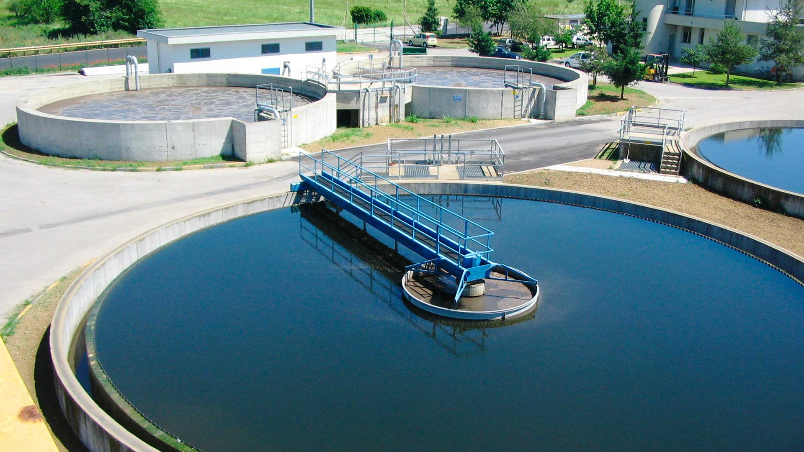
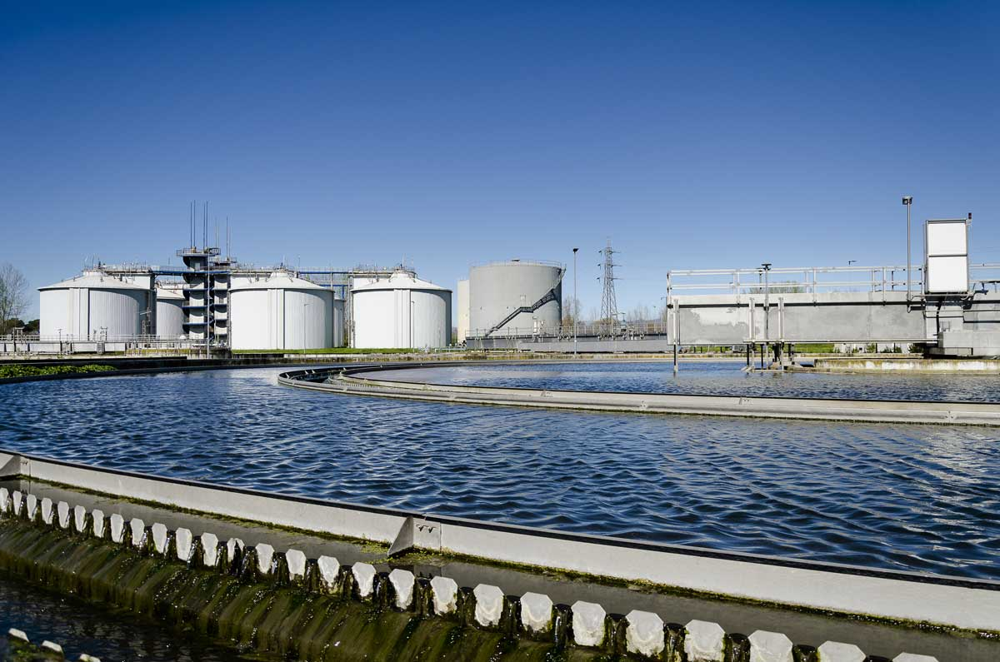
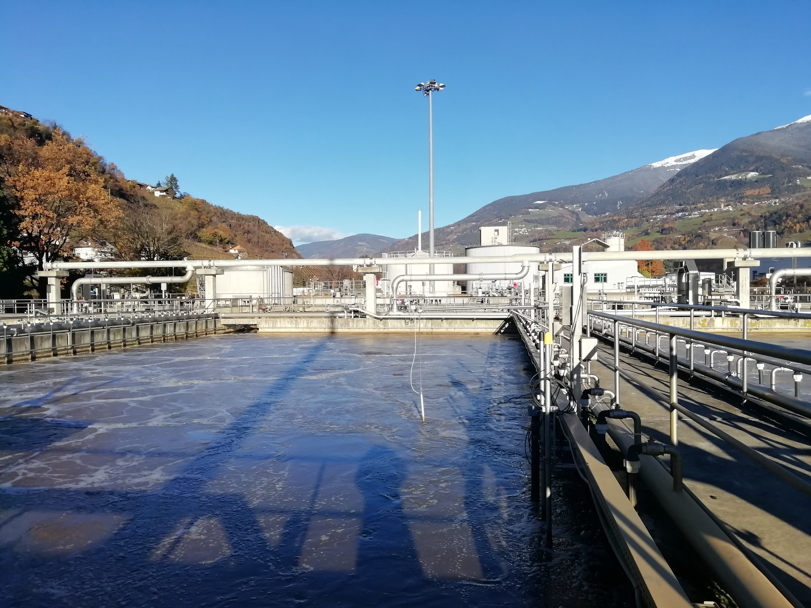

Servizi professionali per impianti civili e industriali a Castelnuovo Vomano
Richiedi un Preventivo


VDM SRL opera nella zona industriale di Castelnuovo Vomano offrendo servizi di gestione, manutenzione ordinaria e straordinaria di impianti di depurazione civili e industriali. Garantiamo continuità operativa, conformità normativa e massima efficienza degli impianti nel rispetto delle normative ambientali vigenti.
Monitoraggio parametri, controllo processi e gestione tecnica completa.
Verifiche periodiche, controllo pompe, pulizia vasche e componenti.
Riparazioni, sostituzione apparecchiature e adeguamenti normativi.
Interventi rapidi per garantire continuità operativa agli impianti.
VDM SRL
Zona Industriale – Castelnuovo Vomano
📞 348 000 5978
✉️ vdm.srl2026@gmail.com